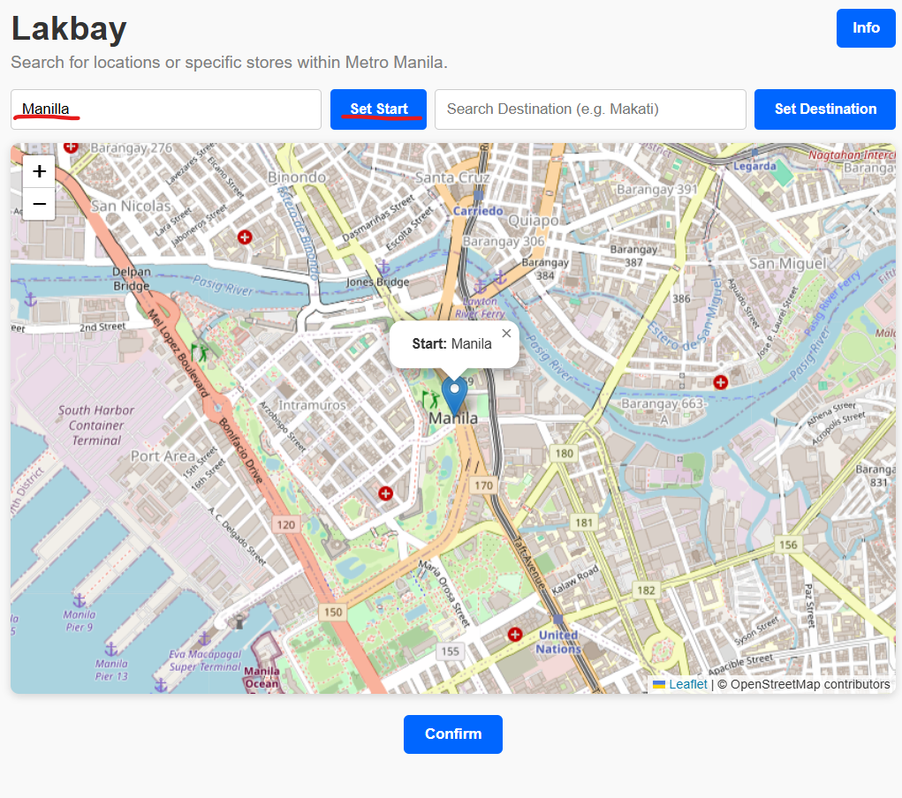
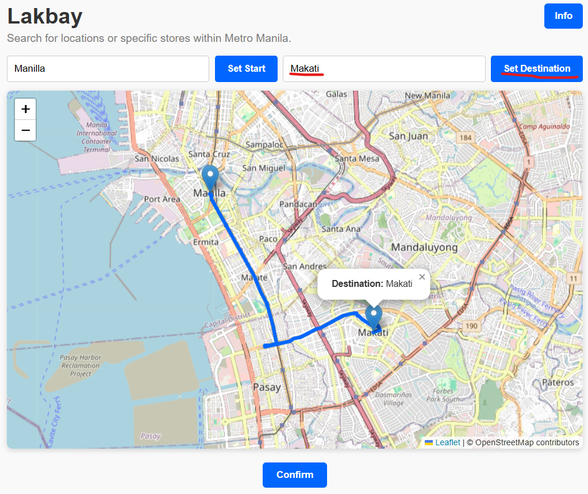
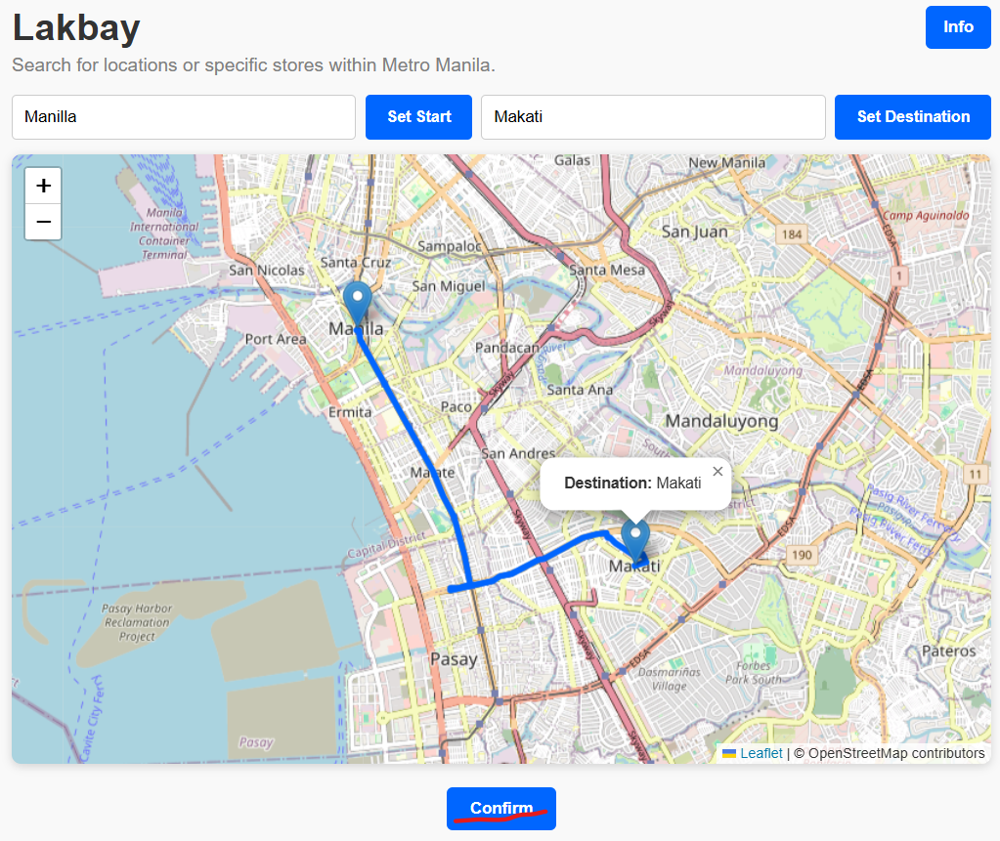
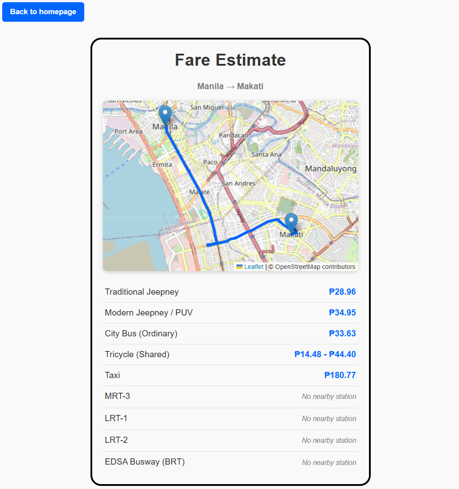

As public transportation is a necessity for years, especially for those who rely on the cheapest modes of transport to get to school and work. Jeepneys, buses, and tricycles have been the main transportation for decades. However, there is a rise in the number of commuters and the number of cars, so many parts of Metro Manila opted to utilize the newly built rail system to alleviate traffic congestion. Light Rail Transit Line 1 started its commercial service in 1984 as the first LRT in the Philippines. Although, transportation problems still remain to be a vital issue for Filipinos as most spend lots of time on commute.
The issue of transportation has become a growing concern as commuting should be quite a hassle due to the time it usually takes to get from one place to another. With the long distances and numerous layovers, the money spent on transportation could accumulate significantly. According to the World Bank, Metro Manila has been identified as one of the most congested metropolitan areas in the world. The issue of transportation has become a growing concern for many people as it impacts people's ability to participate in socio-economic activities. Public transportation has been the go-to mode of transport for most commuters in Metro Manila, because it is the primary means of transportation for millions of people. Jeepneys, buses, and the rail system have been go-to transportation for many years. Yet, many Filipinos who rely on public transportation find themselves struggling to get through traffic jams, bad weather, road closures, and other incidents that could prolong their commute. Such issues highlight the necessity of transportation services that take into consideration not just the location, but the circumstances of the commuter.
Which is why this website aims to be a transportation comparator by giving a list of available public transportation from one location to another. The website can identify the best mode/s of transportation considering the distance, availability, cost, and other conditions specific to the commuters and their needs. By suggesting various options, my website can help people, especially students and commuters, to save money on transportation while providing them with a convenient source of information. In addition, by using technology by using technology to provide them with free and equal access to information about transportation, my website can offer a comprehensive view of the best ways to commute for the average Filipino citizen.
Type in the location where your journey will begin.
After entering your location, press “Set Start” to confirm it as your starting point.

Type in the place you want to go.
Press “Set Destination” to confirm where you want to go.

Check that your starting point and destination are correct, then press “Confirm” at the bottom of the screen.

Lakbay will show the available transportation options for your route, along with their corresponding prices. You can then compare the options and choose the one that fits your needs.
